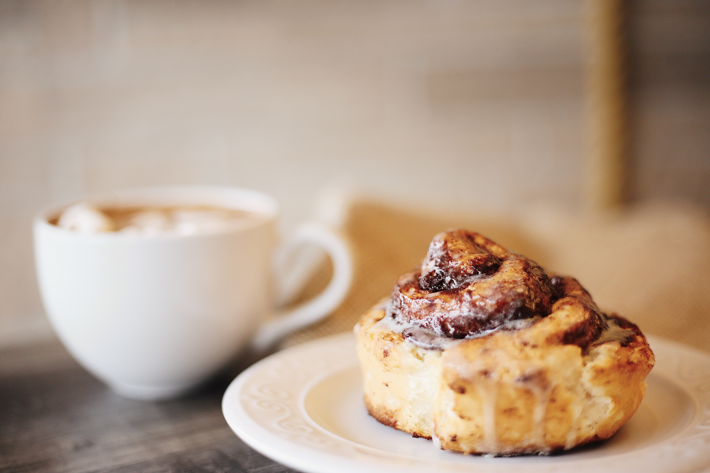

Cinnamon Rolls

Description
A gooey, heart-warming cinnamon roll recipe for the upcoming fall days. A soft and chewy dough coated in
a sugary sweet cinnamon,sugar, and butter mixture. Topped with a smooth white glaze to create perfection
Ingredients
- 1 loaf frozen bread dough thawed
- 3 tablespoons melted butter
- 2/3 cup brown sugar
- 1/2 cup chopped walnuts
- 1 teaspoon ground cinnamon
- 1 teaspoon water, or as needed
- 1/3 cup heavy whipping cream
- 2/3 cup sifted confectioners sugar
- 2 tablespoons milk
- 1 dash vanilla extract
Steps
- Lightly grease a round cake pan with butter
- Roll bread out, brush with melted butter. Combine brownsugar, walnutsm and cinnamon in a bowl
sprinkle over butter. Roll dough into a log. Moisten edge with water and seal. Cut the log into slices.
Arrange the rolls cut side down in the cake pan. cover with a towl and let rise in a warm place
until doubled in volume
- Preheat oven to 350 degrees. Pour heavy cream over the dough.
- Bake until golden brown, about 25 minutes
- Mix confectioners sugar, milk, and vanilla extract in a bowl. Drizzle over warm cinnamon rolls
and serve, ideally with coffee.
Homepage